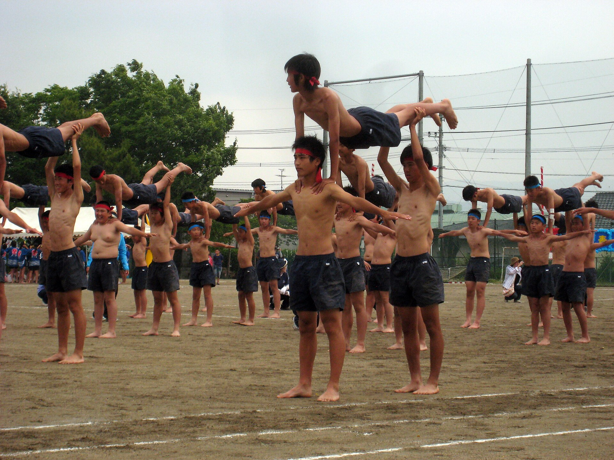

Japan’s calendars are red today. Banks, schools and many offices are closed for Sports Day, one of the country’s 16 national holidays. Local gyms are opening courts and pools, families are joining fitness tests, and organized events range from boccia to parkour tag. Yet the date—Monday, October 12—looks wrong if you know the day’s most famous origin.
The story begins on Saturday, October 10, 1964. Under a clear Tokyo sky, 5,151 participants from 93 countries and territories gathered for the opening of the first Olympic Games held in Asia. Final torchbearer Yoshinori Sakai climbed to the cauldron. Sakai had been born near Hiroshima on August 6, 1945, the day the atomic bomb was dropped. The symbolism connected a young athlete, postwar recovery and Japan’s return to an international stage in a single image.
Two years later, a revision to Japan’s national-holiday law created Taiiku no Hi—usually translated as Health and Sports Day or Physical Education Day—on October 10. The legal purpose was to become familiar with sports and cultivate a healthy mind and body. The calendar date made the Olympic connection impossible to miss.
Why October 12 is still the right date
Japan introduced the “Happy Monday” system to create three-day weekends by moving several holidays from fixed dates to Mondays. Sports Day shifted in 2000 from October 10 to the second Monday in October. In 2026, that formula lands on October 12. The Cabinet Office’s official calendar lists exactly that date.
The move traded anniversary precision for practical time. A fixed October 10 could fall in the middle of a workweek; the second Monday guarantees a long weekend. The holiday can now fall from October 8 through October 14. Only some years return it to the old Olympic date.
That is the first quiet rewrite: the holiday still carries the memory of Tokyo 1964, but the law no longer asks each year to reenact the anniversary. The connection is historical rather than arithmetic.
There were two extraordinary exceptions. To align national holidays with the delayed Tokyo 2020 Olympics, the government moved Sports Day to July 24 in 2020 and July 23 in 2021. The 2020 Games were postponed because of the pandemic, so the first moved date arrived without an opening ceremony. In 2021, Sports Day finally coincided with the opening of the rescheduled Games. The holiday that began with one Tokyo Olympics temporarily left October for another.
The word that Japan replaced
The second rewrite is linguistic. Taiiku (体育) combines 体, “body,” with 育, “to raise” or “educate.” It remains the ordinary Japanese word for physical education at school; a gymnasium is still a taiikukan. But from 2020 the national holiday became Supōtsu no Hi (スポーツの日)—Sports Day—using the loanword supōtsu.
The change was more than a shorter English translation. The holiday’s legal purpose expanded. The Cabinet Office now describes it as a day to enjoy sports, cultivate a spirit of respect for others, and wish for a healthy and energetic society. Earlier wording emphasized familiarity with sport and a healthy mind and body. “Enjoy,” “respect,” and society as a whole entered the official frame.
Government material explaining the amendment stressed that it did not erase the educational meaning of taiiku. Schools did not need to rename physical-education classes or gymnasiums. Japan changed the holiday, not the vocabulary of every locker room.
The choice also says something about who counts as a participant. Taiiku can sound like an institution teaching or training the body. Supōtsu is broader in contemporary use: competition, recreation, watching, volunteering and parasport can sit under the same umbrella. The official Sports Day events reflect that range. At Edogawa General Gymnasium in Tokyo today, the program includes body-composition checks, stretching, table tennis, boccia, archery and pool access. In Hiroshima, a free “movement plaza” offers fitness tests, recreational sports, parkour tag, e-sports and a bicycle-safety class.
The Olympics changed Japan beyond the stadium
Reducing 1964 to a holiday would miss the scale of the moment. The Tokaido Shinkansen began service nine days before the opening ceremony, linking Tokyo and Osaka at a speed that became a global emblem of modern Japan. Tokyo expanded roads, hotels and communications. The Games were among the first to use live satellite transmission internationally, turning a national transformation into a worldwide television event.
The old National Stadium itself did not survive. It was demolished ahead of Tokyo 2020 and replaced by the present Japan National Stadium shown above. The physical site contains another layer of replacement: a new arena on the ground associated with 1964, just as a Monday-based Sports Day carries a fixed-date memory.
The new holiday wording also fits a country confronting demographic change. Japan’s population is older than it was in 1964, and public sport policy cannot focus only on elite competition or school athletics. Accessible community activity, disability sport and habits that can continue through later life matter to the government’s stated goal of a “healthy and vibrant society.” Today’s free local events turn that phrase into ordinary scenes: a child rolling a boccia ball, an adult checking balance, or a swimmer using a municipal pool.

Sports Day is not the same as an undōkai
Foreign coverage often blends the national holiday with the school undōkai, or athletic festival. They overlap culturally but are not identical. An undōkai is a school or community event, often staged in spring or autumn, with relays, team contests, dances and carefully rehearsed ceremonies. Many schools choose dates unrelated to the national holiday.
The distinction matters because undōkai shows how sport is experienced at ground level. The emphasis is frequently collective: red and white teams, coordinated routines, classmates operating equipment, families watching from the perimeter. Winning counts, but organization and group participation are part of the spectacle. Sports Day is the legal holiday; undōkai is the lived format many people remember from childhood.
There is also a history older than the Olympics. Organized Japanese athletic meets appeared in the Meiji period, decades before 1964. Tokyo’s Olympics gave the national holiday a powerful date and symbol, but they did not invent Japan’s school sports-festival culture.
What the date keeps—and what it lets go
A national holiday is a public editing decision. Japan kept the Olympic origin, then loosened the date so families could have three consecutive days. It kept the idea of bodily activity, then replaced an education-centered name with a broader international word. It preserved October in ordinary years, then moved the holiday twice to serve a second Tokyo Olympics.
That makes today more than a day off. October 12, 2026 is a compact record of how Japan handles legacy: not by freezing 1964, but by revising what the anniversary is supposed to do. The old date survives in history books. The current Monday creates usable time. The new name asks people not only to train, but to enjoy sport and respect others.
For visitors, the practical lesson is simple: public institutions and businesses may use holiday hours today. Local Sports Agency listings and municipal facility pages are the best place to check events and opening conditions. When October 10 passes without a red square on the calendar, it does not mean Japan forgot Tokyo 1964. It means the memory moved.
Today’s Japanese expression is スポーツの日 (supōtsu no hi), literally “Sports Day.” 日 means day; スポーツ is the Japanese rendering of “sports.” In a sentence: Kyō wa Supōtsu no Hi desu—“Today is Sports Day.” It is a national-holiday name, not the usual term for a school athletic festival. That is undōkai (運動会). Learning the difference is the kind of small cultural map that makes Japanese more useful—and the kind DraMap is built to turn into play.